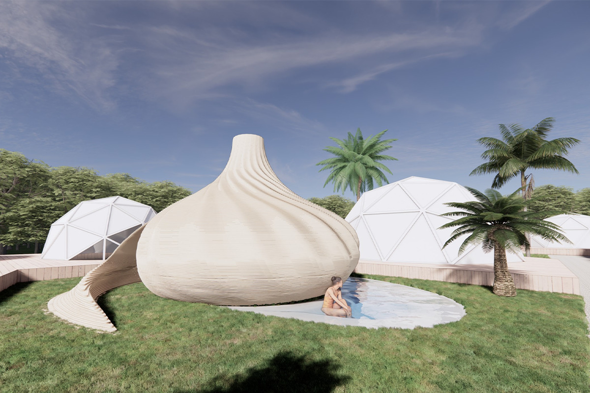
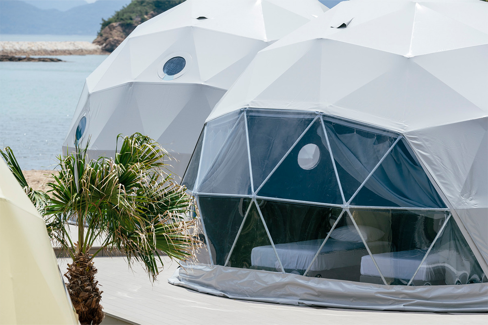
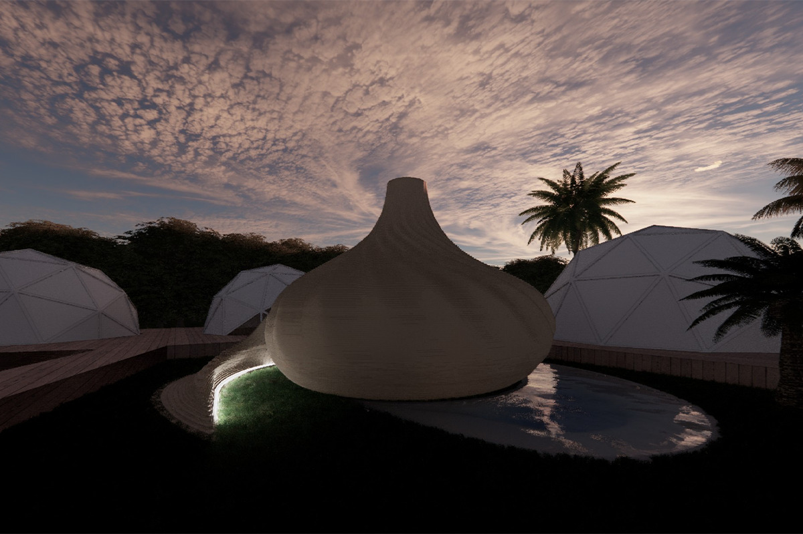
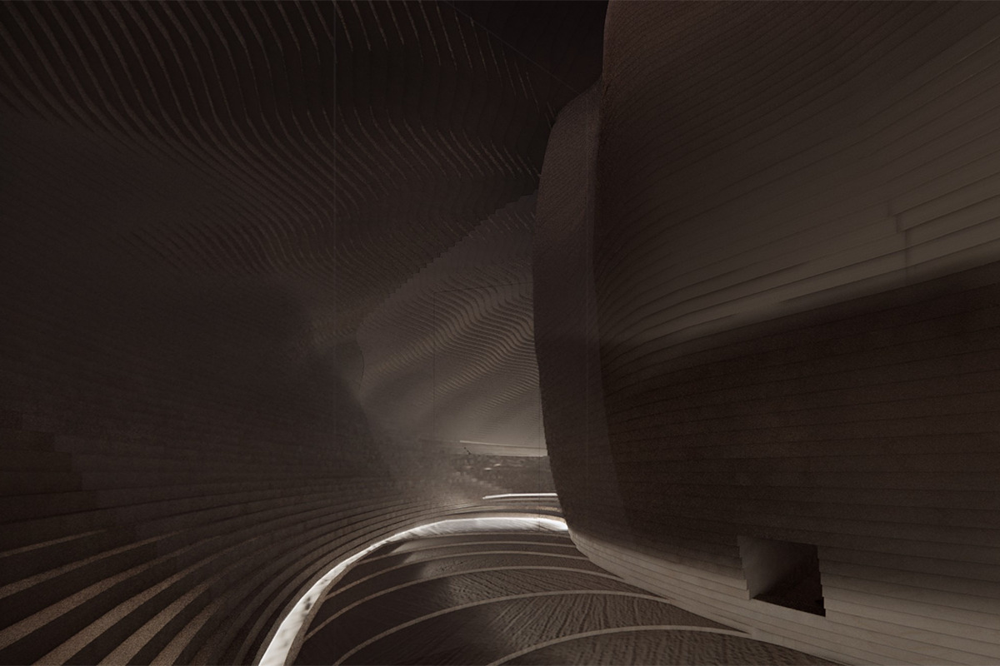
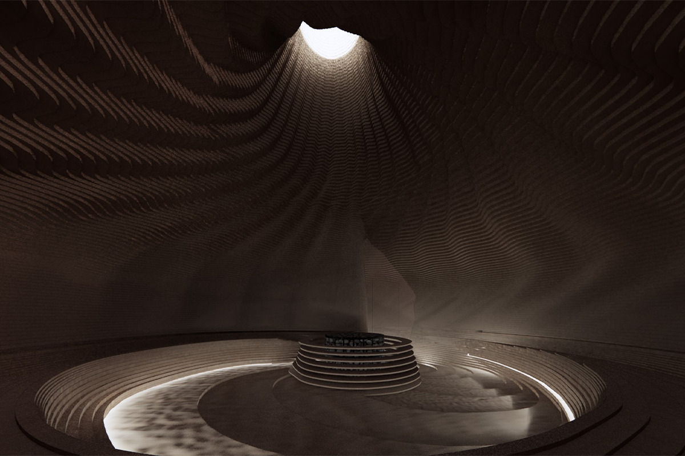
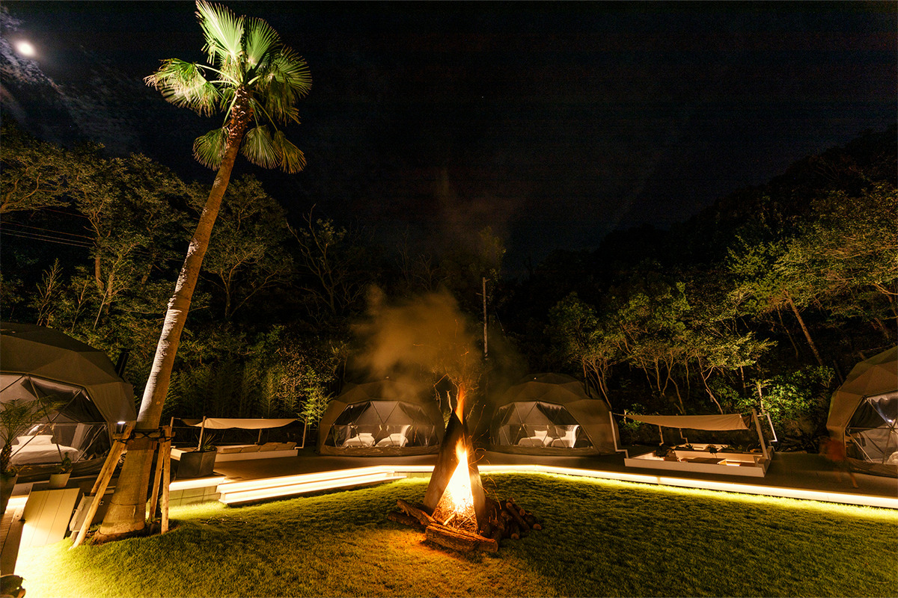

Префектура Кагава · Наосима · сауна
SAZAE: раковина-сауна на глэмпинге SANA MANE

SANA MANE, глэмпинг-курорт на Наосиме, обзавёлся собственной сауной SAZAE. Внутри она как раковина моллюска: стены закручиваются к дыре в потолке, и пар уходит в небо. Сауной могут пользоваться только постояльцы.
Проект
Сауна, сплетённая из ста пятидесяти пластин
Наосима, остров во Внутреннем Японском море с мягким климатом, известен прежде всего как земля современного искусства. SANA MANE раскинулся на редком для острова берегу: здесь сходятся природа, искусство и курортный отдых. Ещё за несколько лет до этого на территории поставили палаточную сауну, и восторженные отклики гостей убедили владельцев построить настоящую.
За проект отвечало бюро Кэнго Кумы, а непосредственно работал архитектор Тайти Кума, сын знаменитого зодчего; надзор вела компания TTNE, бренд, специализирующийся на саунах. Сауна открылась в октябре 2022 года.

Форма оправдывает имя: SAZAE похож на раковину морского моллюска, круглую и пузатую. Весь корпус собран из мягких изгибов, и постройка хоть и заметна, но растворяется в пейзаже. Внутри пространство закручено в спираль: стены поднимаются к потолку широкими завитками, а наверху осталась дыра, словно кончик раковины отрезали. Свет проникает только через это отверстие да от слабых ламп у пола, и освещение меняется вместе с погодой и временем суток.


Дыра в потолке нарушает неписаное правило саунного строительства: тёплый воздух поднимается вверх, и архитекторы веками прятали под крышей всё, что могло выпустить жар. Здесь проблему решили оригинальной системой подачи и вытяжки воздуха. Сиденья изогнуты под спину, поверхность дерева гладкая: потеть можно без раздражения на голой коже.

Вода тоже выдержана в духе места: холодная купель такая, что взрослый человек может растянуться в ней звёздочкой и смотреть в небо.

На Наосиме много произведений, сросшихся с природой. SAZAE добавляет к ним ещё один повод остановиться: посидеть в тишине, слушая прибой и шелест ветра, и позволить себе медленно слиться с окружающим миром.
Глэмпинг SANA MANE
- Адрес
- префектура Кагава, уезд Кагава, посёлок Наосима, Ёкобо, 2182
- Телефон
- +81 878-13-3177
- Сайт
- sanamane.jp